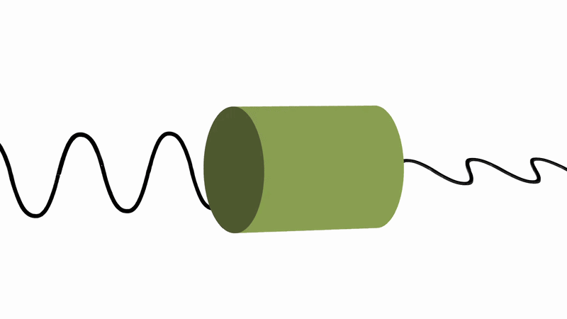
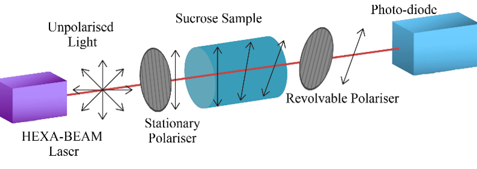
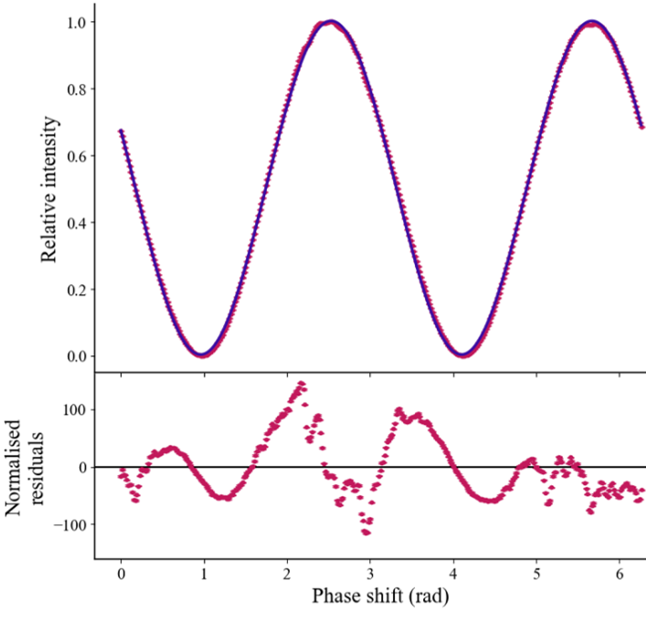
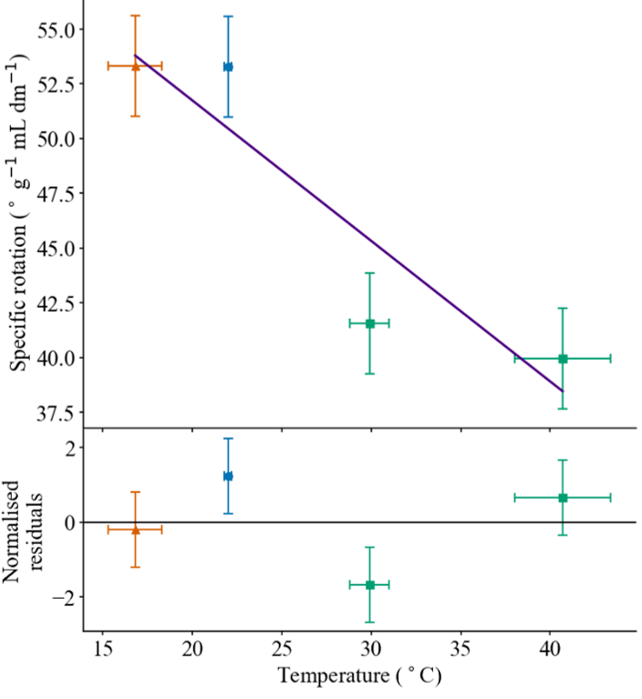

Measurement of the Wavelength Dependence of Optical Rotation in Sucrose
Foreword
I wrote this laboratory report as part of an 'Independent Research Project' during my second year of undergraduate physics. Please don't read this unless you are dull. I recommend its superior use might be a propofol substitute due to its soporific qualities only.
Look only at the lovely GIF I made.
It is not interesting; it measures obscure light properties in sugar. Maybe this effect has food chemistry applications, or perhaps even niche medical usage. Either way, it is a 'solved' field: the equations are known and the results are well established. What's worse, is that what is not known is known.
So my University decided it would be a spiffing idea to have students produce 'new' research on this topic.
The thin film of assessing the equipment was therefore superimposed by me onto the data. This is an intelligent approach, which easily allows access to the grand narrative I like my writing to have, yet only works if you get data. But so bad was the equipment that you see substantial numbers of failed runs of the experiment, interspersed with runs that aren't too bad, leaving us baffled as to the experimental/experimentee errors at play.
I, finally, would like to thank my partner for this project, Yara. This pointless assignment required a great many hours standing by the adult version of a blanket fort, waiting for the automatic data collection (the *sole* reason I picked this topic) to finish, and we spent a lot of the time discussing biology instead of working, which I imagine we both found more interesting.
Scientific Summary
When light travels through certain substances, like sugar dissolved in water, it can change in a subtle way. The direction in which the light wave oscillates, called the polarisation, can rotate. This effect is known as optical rotation.

FIGURE 5: A visualisation of the phenomenon of optical rotation.
In this experiment, light was first passed through a filter which only allowed light vibrating in a single direction to pass. It then travelled through a sugar solution, where its polarisation was rotated. A second filter was placed after the solution and rotated until it was aligned with the light. At this point, the transmitted light was brightest, allowing the angle of rotation to be measured.
The experiment investigated how this rotation depends on the wavelength of the light. In particular, it tested whether blue light is rotated more than red light as it passes through the sugar solution.
This effect has useful applications outside the laboratory. Optical rotation can be used to determine the concentration of substances such as sugars quickly and non-invasively. The results of this experiment show that blue light is rotated more than red light, while also demonstrating the challenges involved in making precise measurements with relatively simple equipment.
Abstract
Optical rotation in sucrose was investigated using polarized light and Malus’s Law to extract rotation angles from photodiode intensity data. The wavelength dependence of the specific rotation was compared with the Drude formula, yielding A being (2.16 ± 0.02) × 10⁷ ° dm⁻¹ g⁻¹ mL nm², in agreement with the literature value, despite a large reduced χ². The temperature dependence was also studied, but reproducibility and systematic errors were larger than any measurable effect. Overall, the experiment shows that optical rotation in sucrose can be observed reliably with simple apparatus, but more precise determination of model parameters requires better control of alignment and reference measurements.
Introduction
When polarised light passes through an aqueous sucrose solution, its plane of polarisation is rotated. This phenomenon, known as optical rotation, produces a rotation angle θ that depends on the properties of the solution. The intensity I of this rotated beam is related to θ by Malus’s Law, where
I = I0 cos²(θ − φ)
with φ representing the phase shift between this angle and the reference zero, and I₀ indicating the initial intensity. θ is related to the solution properties by the specific rotation, defined as
[α]λT = θ / Lc
where L is the sample length and c is the concentration. The specific rotation is dependent on the temperature T, and the wavelength of light λ. The wavelength dependence can be described by empirical relations, such as the Drude formula,
[α]λ(λ) = A / (λ² − λ0²)
which models the wavelength dependence of the specific rotation using constants A, and λ₀. These have the values of 2.16 × 10⁷ ° dm⁻¹ g⁻¹ mL nm², and 146 nm respectively. This formula breaks down at the absorbance wavelengths of the optical medium. The temperature dependence is typically much weaker and is often approximated as linear over small ranges, although it is generally considered negligible compared to wavelength effects for standard laboratory conditions.
This report aims to test the Drude formula for the wavelength dependence of the optical rotation of sucrose. Moreover, it considers the extent to which this experiment functions as a standard teaching laboratory, including the relevance of temperature dependence, and systematic errors due to alignment.
Method

FIGURE 1: A demonstration of the apparatus set-up. The red beam represents the laser path. A visualisation of the polarisation and optical rotation phenomena are also shown.
The apparatus displayed in Fig. 1 was established along an optical rail. Light from the laser was incident upon a fixed polariser (angled at 330 ± 1°) to produce linearly polarised light. This light then passed through a sucrose sample and a rotatable polariser, before being detected by a photodiode. The polariser angle was varied over 360° in 1° increments, and at each degree 512 intensity measurements were recorded and averaged.
This was done to maximise the number of points available for χ² fitting and reduce the statistical uncertainty in the phase extraction.
A spirit-level was used to obtain optimum optical orientation, by ensuring parallelism along the optical rail. Ambient light was minimised using black card and tape on electrical components. Only visible wavelengths were used to avoid absorbance wavelengths, and enable visual beam tracking to ensure alignment.
Each session, background readings were taken by disabling the laser. This was done to estimate variation in the systematic error in our measurements, as well as to ensure there was no discernible pattern thereof. Moreover, blank tube datasets were taken in every session besides the penultimate, providing a reference against which the sucrose phase shifts were compared relative to.
Whilst keeping L and c constant throughout, this procedure was repeated with variable wavelengths of light, drawing upon two unique lasers. The sucrose solution was prepared identically for each session by dissolving (100.0 ± 0.1) g of sucrose in water to a total volume of (500.0 ± 0.5) mL in a volumetric flask, thereby evading variation in concentration due to dissolution effects. This was then poured into a tube of fixed (34.3 ± 0.07) cm length.
Temperature dependence was measured separately using 685 nm light, again with constant L and c. The temperatures were taken with a thermocouple at the start and end of each run. To minimise thermal drift, the tubes were wrapped in tin foil.
The data was modelled in the χ² minimisation algorithm as
I = I0 cos²(θ − φ) + B
with B representing the background light intensity. Subtracting the background estimate alone did not always eliminate the non-zero minima, and occasionally created negative minima. To enable χ² analysis of the phase shift, therefore, B was included. For each data set, the appropriate blank tube angle was subtracted from the measured phase, as this phase shift is a relative measurement.
Results

FIGURE 2: The intensity plot over 360° for the 514 nm laser. Horizontal error bars are not present, as per the Error Appendix. A fitted curve is included in a darker purple. Normalised residuals are underneath.
Fig. 2 shows a representative dataset (514 nm), with the intensity plotted against polariser angle. A clear sinusoidal dependence is observed, consistent with a cos² curve showing a measurable phase offset. Normalised residuals with a visible structure are present below.
| Wavelength (nm) | Raw Phase (rad) | Phase Shift (°) | Expected Shift (°) | Red χ² |
|---|---|---|---|---|
| 405 ± 1 | 1.60 | 101 ± 2 | 103.8 ± 0.2 | 0.77 |
| 520 ± 1 | 0.91 | 57 ± 2 | 59.49 ± 0.04 | 0.31 |
| 635 ± 1 | 0.76 | 48 ± 2 | 38.80 ± 0.01 | 45 |
| 685 ± 1 | 0.56 | 37 ± 2 | 33.082 ± 0.009 | 64 |
| 407 ± 1 | 2.3 | 160 ± 2 | 102.7 ± 0.2 | 490 |
| 514 ± 1 | 0.61 | 62 ± 2 | 61.01 ± 0.05 | 2700 |
| 635 ± 1 | 0.045 | 40 ± 2 | 38.80 ± 0.01 | 1500 |
| 637 ± 1 | 0.0087 | 27 ± 2 | 38.54 ± 0.01 | 0.47 |
| 687 ± 1 | -0.0024 | 27 ± 2 | 32.880 ± 0.008 | 145 |
TABLE 1: Extracted phase data and fit statistics for each wavelength. The table lists the raw phase obtained from the cosine-squared fit, the phase shift relative to the corresponding blank-tube measurement, and the expected phase shift from Eq. 3. The reduced χ² values for each fit are also shown. Uncertainties are included for all reported quantities except the raw phase, whose uncertainty is of order 10-5, and is omitted for clarity. The horizontal line separates datasets obtained in different sessions.
The extracted phase shifts for all wavelengths are summarised in Table 1. The phase shifts range from 27° to 160°, and the corresponding reduced χ² values span from 0.31 to 2700, indicating significant variation in fit quality between datasets.
Fig. 3 shows the variation of specific rotation with wavelength, demonstrating a decreasing trend with wavelength. Chi-squared fitting yielded a value of A of (2.16 ± 0.02) × 10⁷ ° dm⁻¹ g⁻¹ mL nm², with a reduced χ² of 11.5.
Fig. 4 relates specific rotation with temperature at 685 nm. The reduced χ² for the linear fit is 2.38, with the gradient equalling (-0.6 ± 0.1) ° dm⁻¹ g⁻¹ mL °C⁻¹, and the y-intercept being (64 ± 4) ° dm⁻¹ g⁻¹ mL.

FIGURE 3: The relationship between the viable wavelength datasets, and the specific rotation. The literature curve is shown as a dotted black line, and the fitted curve is shown in red. Horizontal error bars are present yet too small to be seen. Normalised residuals are plotted underneath.
Discussion
Table 1 reveals a clear discrepancy between datasets obtained in different sessions. Data above the horizontal line correspond to the initial sessions, while those below correspond to the final session. The bottom three exhibit raw phases clustered at zero, with negligible spread, in contrast to the ~10° observed in earlier data.
The resulting phase shifts arise solely by the subtraction from the blank tube phase shift. It can clearly be seen from this raw phase collapse that those datasets are inconsistent with the expected physical behaviour, and so were not included in Fig. 3.
Contrastingly, top datasets from the final session display non-zero raw phases. The 514 nm result lies within one standard error of the expected value, whereas the 407 nm result, conversely, deviates by more than a dozen standard errors. The latter is rejected, in accordance with the large reduced χ². Whilst the former has a worse reduced χ², it is cautiously retained due to strong literature agreement.
The causes of this inconsistently anomalous behaviour are unclear, although the consistently high reduced χ² values (besides 637 nm) indicate a systematic issue. At 637 nm, the measured intensity was sufficiently low that the relative uncertainty became large, explaining the low χ².
One possible explanation is a change in polariser between sessions. Wavelength-dependent transmission could suppress polarisation between experiments, producing inconsistent phase shifts. Despite the polarisers being checked post-experiment, a lack of labelling prevents verification of this hypothesis, which therefore remains speculative.
The datasets taken in the earlier sessions (above the black line) show reasonable agreement with the expected values. All lie within two standard errors of the literature value, except the 635 nm value, which deviates by five. Despite this discrepancy, the result remains physically feasible and hence is retained. These datasets, along with the 514 nm run, were used to produce Fig. 3.
Fitting both parameters of the Drude model is numerically unstable when only a small number of wavelengths are available. Small variations in the measured angles produce large variations in the fitted value of λ₀, hence only A was found.
Fig. 3 exhibits the expected trend of decreasing specific rotation with increasing wavelength. The extracted A of (2.16 ± 0.02) × 10⁷ ° dm⁻¹ g⁻¹ mL nm² is consistent with the literature value to the quoted precision, demonstrating the resilience of this experiment despite the presence of significant systematic errors.
The large reduced χ² of 11.5, however, indicates the fit does not describe the data well, an effect inflamed by the 635 nm dataset.
The apparent agreement with the literature arises from the relatively large optical rotation in sucrose, such that systematic errors are small relative to the signal. Consequently, the overall dispersion trend is preserved despite significant experimental limitations.
This robustness demonstrates why this experiment remains a useful teaching demonstration of optical activity. More precise measurements of A, however, would require a greater number of wavelengths. Additionally, due to the nature of the curve in Fig. 3, greater precision could also arise from using smaller wavelengths, as the relative uncertainty in each measurement will be smaller.
The residuals in Fig. 2 are not randomly distributed, instead exhibiting a clear oscillatory pattern, indicating Eq. 1 does not fully describe the data. This behaviour was observed consistently across datasets.
The most likely cause of this is a deviation from ideal Malus-law behaviour. Real polarisers do not perfectly transmit a single polarisation state, and finite extinction ratios introduce additional harmonic components into the intensity variation. As a result, the true intensity is not perfectly described by a simple cos² dependence, leading to systematic residual patterns.
Additionally, alignment was a dominant source of uncertainty in the experiment. Small rotations of the tube caused the beam position to move across the photodiode, indicating that the laser path was not perfectly parallel to the rail.
This is consistent with refraction within the tube due to non-parallel walls, combined with imperfect laser alignment, and mechanical instability in the mounts. A similar effect was observed when wavelengths were changed, requiring constant corrections of the equipment. This introduces angle-dependent variations in intensity, rather than purely random noise.
These alignment variations do not correspond to changes in the optical rotation itself, but instead the measured intensity in each angle. As the phase is obtained from a nonlinear fit to the intensity data, small variations are amplified between runs, introducing a systematic spread in extracted phase values.
A separate consequence of misalignment is a change in the effective optical path length. For a given small angle δ this effective length is given by
Leff = L / cos δ
≈ L(1 + δ² / 2)
For a tilt of 1°, this generates a percentage error of 0.015% in our length, which is negligible compared to experimental uncertainties. Thus, it fails to explain the discrepancy between the expected and measured results.
Even for datasets showing the expected cos² dependence, the reduced χ² values are often significantly above unity. This indicates that the uncertainties assigned to individual datapoints do not fully capture the true variability in the measurements.
Thusly, whilst the error model accounts for statistical fluctuations in the photodiode signal and background, these contributions are small due to averaging, and therefore produce very small per-point uncertainties.
For three nominally identical measurements, a standard deviation of 1.58° was observed, highlighting how the experiment is limited by reproducibility, rather than measurement precision.
This spread is not captured by the per-point uncertainties used in the χ² fitting. Resultingly, the assigned uncertainties underestimate the true variability in the data.
The fitted model therefore appears statistically poor despite qualitatively good agreement with the data. The large reduced χ² values arise because the fitting procedure assumes highly precise datapoints, while additional variation from alignment and phase extraction is not included in the uncertainty model.
Blank tube reference measurements were often not obtained for the same wavelength as the corresponding sucrose dataset (e.g. the 685 nm sucrose datasets were compared against a 405 nm blank). As the blank tube measurements define the relative zero phase, this introduced a systematic offset to the data as opposed to a random uncertainty.
While variations in light intensity between wavelengths contribute to differences in measurement precision, they do not account for the discrepancies observed. Instead, the use of mismatched reference measurements, combined with the sensitivity of the phase extraction to alignment conditions, leads to systematic shifts in the calculated rotation angles.
This contributes to both the spread between datasets and the deviation from expected values. Amelioration of this would require a blank tube run to be performed directly after a sucrose tube, ensuring a consistent zero-phase reference was available with near-identical alignment.
It is often stated in reports on this subject that temperature can be taken as negligible. This was investigated, with results shown in Fig. 4. A reasonable reduced χ² value of 2.38 was obtained from the linear fit.
This graph is not a meaningful representation of the physical reality of the experiment. Literature suggests the expected variation over the explored temperature ranges is small, being an order of magnitude below the uncertainty due to the χ² fitting alone.
Although the linear fit correctly suggests a negative temperature dependence, this trend is not robust. It combines one compromised final-session measurement with two measurements lacking their own blank-tube correction (in green), and hence having unknown absolute vertical positions.
The fitted intercept does not represent a meaningful physical quantity in this context. The dominant uncertainties discussed above, along with considerable temperature drift, render this effect redundant, supporting the standard treatment of temperature as negligible in undergraduate experiments, because it is smaller than the precision achievable with this apparatus.
Conclusions
The phenomenon of optical rotation was observed to be qualitatively consistent with theoretical expectations for a tube of sucrose of fixed length and concentration, agreeing with Malus’s Law.
The Drude formula parameter A was found to be (2.16 ± 0.02) × 10⁷ ° dm⁻¹ g⁻¹ mL nm², in agreement with the literature value.
Despite this, systematic uncertainties dominated, hindering the reproducibility of the simple set-up used, and limiting the precision to which this parameter could be found.
The large phase shifts, however, mean the underlying relation is preserved regardless. This equipment is shown to be effective for demonstrating this regime of physics yet is unsuitable for high precision experiments, like temperature-dependence.
Future experiments should focus on improving alignment stability and ensuring consistent reference measurements to reduce systematic errors.
Acknowledgements
The author would like to thank Professor Walker for his guidance during the experiment.
Error Appendix
1. Phase Shift Uncertainties
Uncertainties were propagated using the functional approach [6]. The contribution from each variable was taken as the change in the calculated quantity when that variable alone was shifted by its uncertainty, with all contributions then added in quadrature. For clarity, uncertainties are denoted with the calculated function as a superscript and the variable as a subscript.
The Photonics Technologies laser used during the experiment had no uncertainties listed on the manufacturer’s website, hence an approximate error of ± 1 nm was assumed. This was because lasers of the same design had wavelengths which varied by this increment.
The angle from the rotatable polariser was automatically recorded. Although the software states the angles with up to 16 decimal points, the true uncertainty is unlikely to correspond to the final digit. Since the uncertainty in the angle is expected to be orders of magnitude beneath the other uncertainties in this experiment, it was taken to be negligible.
A weighted mean for all background data points was used to determine the background intensity. χ² minimisation modelling the data as a constant value, however, consistently yielded large reduced χ². This suggests the background was not randomly fluctuating around a true fixed point. The standard deviation, therefore, was taken as the error in the background measurement, instead of the error on the mean, as it better reflected the physical variation present.
For all datasets, the uncertainty of the intensity of each degree was taken using the standard error of the mean. Using the functional approach [6], the error in the background was added in quadrature to this value, to account for the additional statistical variation present in all measurements. This yielded the uncertainties used in the phase extraction for each experiment, which are not shown in Table 1 due to their small magnitude.
Each experiment’s phase shift is defined relative to a corresponding blank tube measurement, taken in each session besides the penultimate. In this case, the blank tube was taken to be the average of the two previous session’s similar results, with the corresponding uncertainty also taken as the average. The corrected phase shift was therefore obtained by subtracting the blank tube phase from the sucrose phase.
Using the functional approach on this linear operation, this simplifies to adding their errors, αBlank and αSucrose respectively, in quadrature. The corrected phase shift’s uncertainty αφ was
αφ = √( αSucrose² + αBlank² + σ² )
where σ represents the reproducibility of the experiment. For the same 330° polarising filter, with the same tube, three separate attempts yielded a standard deviation of 1.58°, indicating significant variation between runs. This term, therefore, was included as an additional systematic contribution, representing the alignment sensitivity of the apparatus, and treated as independent of the other uncertainties.
2. Specific Rotation Uncertainties
The uncertainty in the length αL was obtained, using the error of two independent measurements of uncertainty ± 0.5 mm added in quadrature to give ± 0.7 mm [6].
The resolution of the mass balance was taken as the uncertainty in the mass, αm, with a value of ± 0.1 g. Due to practical limitations with volumetric flasks, the uncertainty in the volume, αV, was taken conservatively to be ± 0.5 mL.
The uncertainty in the concentration αc was determined using the functional approach to be
αc = √( (αm / c)² + (αV / c)² )
The error in the specific rotation, αα, was then calculated by
αα = √( (αL / α)² + (αc / α)² + (αφ / α)² )
αtheory, the uncertainty in the expected values, was found by rearranging Eq. 2 for the angle θ, and the same method as above to give
αtheory = √( (αLtheory)² + (αctheory)² + (αφtheory)² )
3. Temperature Uncertainties
The temperature of the tubes was measured before and after the experiment. The average temperature was taken to represent the temperature for that dataset. Half the range was taken as the error: if a temperature fell from 2° to 1°, for instance, it would be taken as (1.5 ± 0.5) °.
References
[1] S. F. Mason, Molecular Optical Activity and the Chiral Discriminations, Cambridge University Press: Cambridge (1982).
[2] T. M. Lowry and E. M. Richards, The rotatory dispersive power of organic compounds. Part XIII. Rotatory dispersion of camphorquinone and of sucrose, J. Chem. Soc., 2511–2524 (1924). doi: 10.1039/CT9242502511
[3] H. Soetedjo and J. Räty, Use of a modified Drude’s equation to investigate the optical rotation property of sugars, Optik 125, 7162–7165 (2014). doi: 10.1016/j.ijleo.2014.07.112
[4] J. C. MacDonald, Method for the accurate determination of specific rotation. Specific rotation of valine and leucine, Can. J. Chem. 47, 2739–2746 (1969). doi: 10.1139/v69-456
[5] M. Nixon and I. G. Hughes, A visual understanding of optical rotation using corn syrup, Eur. J. Phys. 38, 045302 (2017). doi: 10.1088/1361-6404/aa6a0b
[6] I. G. Hughes and T. P. A. Hase, Measurements and their Uncertainties, Oxford University Press: Oxford (2010).